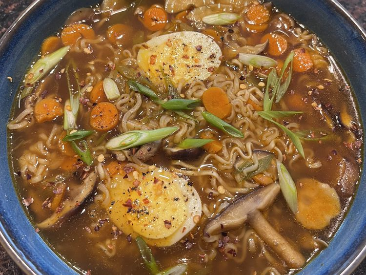

Fancy Ramen

Fancy ramen noodles with veggies.
Ingredients
- 4 cups water
- 8 ounces sliced fresh mushrooms
- 1 bunch green onions, thinly sliced
- 1 large carrot, sliced
- 1/2 yellow onion, sliced
- 2 tablespoons soy sauce
- 2 tablespoons minced garlic
- 1 tablespoon sriracha sauce
- 1 teaspoon sesame oil
- 1 teaspoon rice wine vinegar
- 1/2 teaspoon ground white pepper
- 1/2 teaspoon cracked black pepper
- 2 (3 ounce) packages chicken-flavored ramen noodles
Steps
- Combine water, mushrooms, 1/2 the green onions, carrot, onion, soy sauce, garlic, Sriracha sauce, sesame oil, rice wine vinegar, white pepper, black pepper, and flavor packets from ramen in a large pot.
- Bring to a boil.
- Add noodles and cook, occasionally stirring, for about 5 minutes.
- Reduce heat to a simmer and cook until vegetables are tender, about 10 minutes.
- Serve topped with remaining green onions.